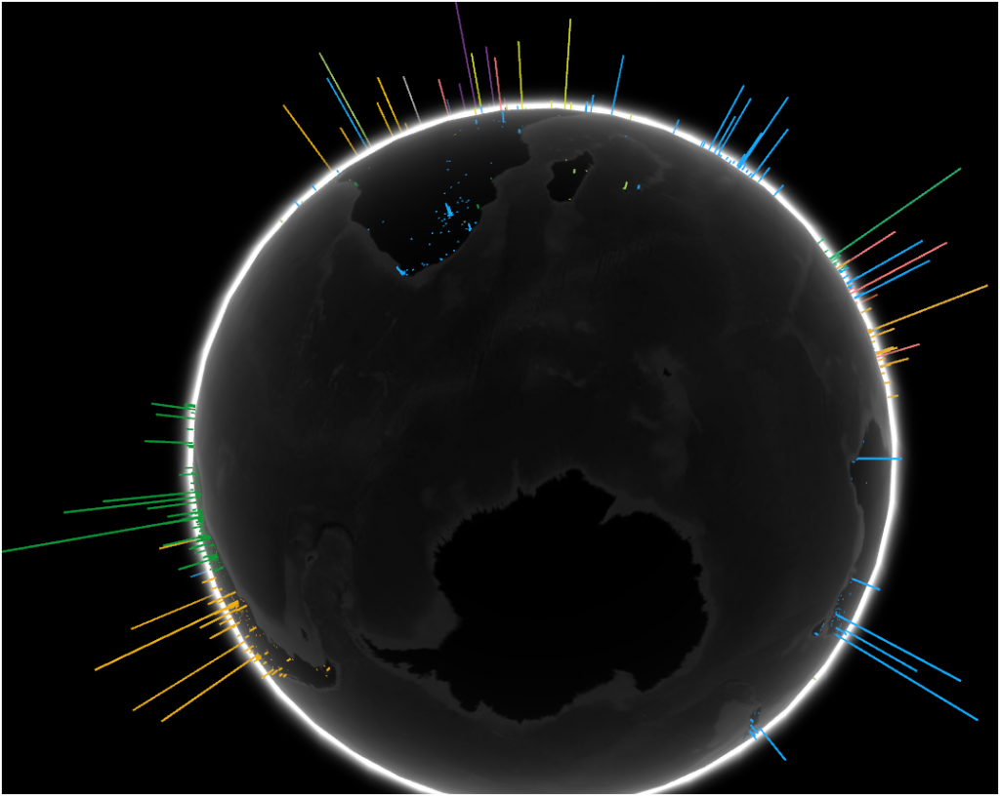

Antarctica is still loyal to Altavista.
Sadly, Google is still incapable of making any headway in the lucrative markets of the Last Continent. Still, as their recently released visualization of Google searches across the globe reveals, they’re doing all right in the rest of the world. Built in WebGL, the WebGL Globe is a beautiful example of what’s possible with web technologies–as long as you’re not trying to deliver those technologies to folks using Firefox.